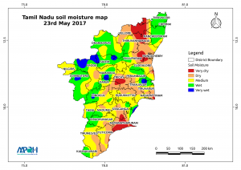

 Soil is one of the most important non-renewable basic resources on the earth’s surface.
The major soil groups of Tamil Nadu
Red soils, (62 per cent)
Black soils (12 per cent)
Laterite soils (3 per cent)
Coastal soils (7 per cent)
As per the USDA system of soil classification (Taxonomy), the soils of Tamil Nadu are classified in to Six orders
About 50 per cent of the total area of Tamil Nadu state is occupied by Inceptisol, 30 per cent by Alfisols, 7 per cent by Vertisols, 6 per cent by Entisols, 01 per cent by ultisols and very negligible area by Mollisols.